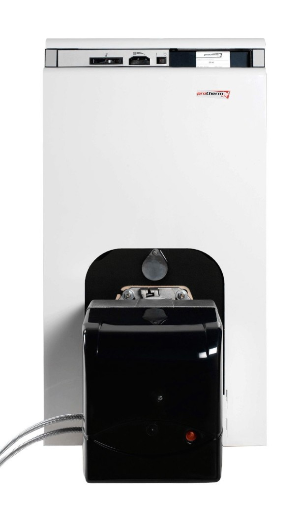

Тепло про запас
Что делать, если за окном –15°С, а котел дал сбой или в поселке временно остановлена подача газа/электричества? О том, как застраховаться от непредвиденного холода в доме, подумайте в момент выбора системы отопления в доме. Для этого в дополнение к основной системе отопления предусматривается резервная (теплый пол, электрические и инфракрасные обогреватели и т.п.), устанавливаются многотопливные и/или ИБП. Данные устройства удобно использовать и в случае, когда газ еще не подведен, но планируется.
Многотопливный котел
Многотопливные котлы позволяют использовать разные виды топлива путем смены горелки. В некоторых моделях имеется встроенный тэн, что позволяет использовать различные виды топлива, электроэнергию, газ, жидкое и твердое топливо.
Теплообменник котла может быть чугунным или стальным. Преимущества стального – небольшой вес и более высокий КПД. Котлы из чугуна надежнее и лучше противостоят коррозии.

Самые последние модели универсальных котлов имеют встроенную автоматику, которая самостоятельно переключается на 2-й вид топлива, газ или солярку. Такие котлы называются двухпоточными.
По принципу работы многотопливные отопительные котлы бывают одноконтурные и двухконтурные (табл. 1). Одноконтурный котел подключается только к системе отопления, он отапливает помещения площадью до 1000 м?. Для обеспечения горячей водой устанавливают бойлер.
Двухконтурный котел подключают к водяному отоплению. Он нагревает воду для бытовых нужд. Универсальные двухконтурные котлы отличаются наличием специальной чугунной плиты, которая может быть использована для приготовления еды.
Чем выше мощность универсального котла, тем меньше возможностей совмещения различных видов горючего. Полный набор функций и возможностей в типах топлива имеют котлы с мощностью до 50 кВт. Они работают на всех видах горючего, могут иметь и бойлер для обогрева проточной воды, и плиту для приготовления пищи.
Виды котлов по используемому топливу
Газ и дизельное топливо
На первый взгляд, эта комбинация может показаться странной: производители совместили самый дешевый вид топлива с наиболее дорогим. Однако это решение технически грамотное. Дело в том, что газовый и дизельный котлы различаются только по типу горелки, и то незначительно. Поэтому один и тот же комбинированный котел может работать на магистральном или сжиженном газе, а также на дизельном топливе. Причем переход с одного на другое или третье осуществляется за счет минимальных перенастроек и, возможно, замены деталей горелки. Эта задача достаточно проста для сотрудника сервисной службы.
Выбор любого из указанных видов горючего практически не влияет на тепловую мощность котла. Такой котел – подходящее решение для отопления дома большой площади.
Газ, дизельное и твердое топливо
Первично такие агрегаты являются твердотопливными, что подразумевает минимальную автоматизацию процесса работы и контроля безопасности. Газовые и дизельные горелки в них – это навесное оборудование (иными словами, котел нельзя рассматривать как полноценное газовое или дизельное водогрейное устройство).
Они проигрывают по многим показателям: КПД, мощность, безопасность, удобство использования. Это сравнительно недорогой агрегат для непривередливых владельцев маленьких загородных домов.
Газ, дизельное топливо и электричество
Мощности такого многотопливного котла недостаточно для обогрева дома. Основная задача этого агрегата – поддержание оптимальной температуры в системе отопления. Он не позволит воде в системе замерзнуть даже в сильный мороз, но по-настоящему тепло в помещениях не будет.
Газ, дизельное топливо, твердое топливо и электричество
Многотопливные котлы, которые могут работать на всех видах топлива, достаточно громоздки и занимают много места. Выпускаются только в напольном варианте. Из зарубежных производителей такие модели выпускают шведская фирма CTC и финская Jama. Из российских котлов, способных работать на четырех видах топлива, можно отметить модель «ЗИОСАБ-45» и серию котлов «Пламя». Мощность котла «ЗИОСАБ-45» при использовании газа или жидкого топлива равна 45 кВт (отапливаемая площадь до 450 м? хорошо утепленного помещения с высотой потолков до 3 м), при работе на твердом топливе – 30 кВт. В котле «ЗИОСАБ-45» предусмотрена возможность использовать и электрическую энергию. Котлы на четырех видах топлива фирм Jama и «ЗИОСАБ» – двухконтурные. Универсальные котлы «Пламя» выпускаются как двухконтурными (с буквой В в названии), так и одноконтурными (без В в названии).
Источники бесперебойного питания
Чтобы обеспечить работу котла в случае отключения электроэнергии, можно использовать устройство бесперебойного питания. Когда речь идет об эпизодических отключениях и автономном электроснабжении котла, инвертор выигрывает у «традиционных» решений на базе генераторов по многим позициям:
- моментально «подхватывает» нагрузку при отключении;
- работает без шума;
- не требует отвода выхлопов и горячего воздуха;
- не боится холода;
- практически не нуждается в обслуживании.
Какой инвертор подойдет для котельной?
Для котла подходит не каждый ИБП. Во-первых, он должен давать гладкую синусоидальную форму тока, идентичную переменному току городской сети. Искаженная форма тока приводит к быстрому износу насосов, а также может «не понравиться» системе поджига горелок котла. Поэтому в качестве ИБП котла годятся инверторы только категории «чистый синус».
Обратите внимание, что все ИБП с «псевдосинусом»-«аппроксимированным синусом», а также «бюджетные» генераторы и даже часть брендовых генераторов младших линеек имеют искажения формы тока.
Во-вторых, бесперебойное питание котла подразумевает работу с большими пусковыми мощностями. Это мощность, которая потребуется для запуска прибора. Она может превышать номинальную, потому что насосу требуется преодолеть сопротивление неподвижной жидкости.
Разумеется, можно использовать генераторы или офисные ИБП с «чистым синусом» и мощностью, равной величине пусковых мощностей приборов. Но повышенная мощность требуется только на короткое время – до нескольких секунд. И более мощный, чем нужно, ИБП высокого класса – это бесполезные траты. А более мощный, чем нужно, генератор – это еще и повышенный износ его двигателя из-за постоянной работы в режиме недозагруженности.
Инверторы, как специализированные ИБП для нагрузок с пусковыми токами, способны «переваривать» пиковую пусковую нагрузку почти в 2 раза больше своего номинала. Поэтому инверторы – еще и самое выгодное решение, когда не требуется аварийное электроснабжение целого дома, а нужно только бесперебойное питание котельной.
Длительность бесперебойного питания котла
Чтобы оценить время автономной работы, нужно знать два параметра:
- приблизительную среднечасовую мощность нагрузки;
- емкость аккумуляторной батареи.
Мощность, постоянно потребляемая котельной (автоматика котла, поджиг и наддув горелки, насосы принудительной циркуляции теплоносителя), редко превышает 400–500 Вт. Мощность погружного насоса скважины варьируется от 1000 до 3000 Вт. Но современные системы водоснабжения имеют гидроаккумулятор, благодаря которому насос скважины работает обычно не более 5–6 мин в час. Поэтому, к примеру, насос 2 кВт будет потреблять в час только 200 Вт.
Таким образом, типовая среднечасовая мощность котельной – порядка 600 Вт/ч.
Инвертор какой мощности потребуется?
Кроме среднечасовой мощности нагрузки, определяющей продолжительность резервного питания котла, для выбора инвертора необходимо знать, какая мощность может потребоваться единовременно. Она и определит необходимый номинал мощности инвертора. При этом желательно закладывать 20% запас сверх мощности нагрузки.
В большинстве случаев для бесперебойного питания котла и насоса будет достаточно одного 3 кВт-го блока инвертора. Но если для водоснабжения дома используется погружной насос мощностью более 2–2,5 кВт (который может потребовать пусковую мощность больше 6 кВт), необходимо более тщательное вычисление суммарной мощности электроприборов котельной (табл. 2).
Сколько стоит инвертор?
Стоимость оборудования зависит от производителя и функциональных возможностей, в частности емкости аккумулятора:
- ИБП Delta N-Series 1 kVA (максимальная нагрузка 700 Вт) + 3 аккумуляторные батареи мощностью 45 Ач – от 6,1 млн руб.; 80 Ач – от 7,7 млн руб.; 100 Ач – от 9 млн руб.;
- ИБП IneltMonolithK 1000 LT + 3 АКБ DJM1245 – выходная мощность 1000 ВА/700 Вт, с микропроцессорным управлением, который оснащен двойным преобразованием напряжения. Модель оборудована жидкокристаллическим дисплеем и слотом для подключения WEB/SNMP-адаптера. Она включает в себя сверхмощное зарядное устройство, однако не имеет встроенных АКБ, предполагая подключение внешних. Цена – от 3,8 млн руб.
- ИБП HeliorSigma 1 KSL + 2 АКБ – 1-фазное входное напряжение, выходная мощность 1000 ВА/800 Вт, с микропроцессорным управлением, оснащенным двойным преобразованием напряжения. Цена – от 2,5 млн руб.
Резервное отопление электрическими конвекторами
В качестве источника резервного отопления также используют электрические конвекторы. Они занимают минимум пространства, т.к. имеют гладкий плоский корпус. Есть напольные и настенные модели. Конвектор прост по конструкции, быстро и бесшумно обогревает помещение. Прибор не «выжигает» кислород, поэтому может монтироваться даже в детской.
Конвекторы оборудуются механическим или электронным термостатом. В последнем случае прибор самостоятельно регулирует температуру выходящего воздуха. Благодаря датчикам, которые указывают на превышение температуры воздуха, конвектор автоматически снижает температуру нагрева и переходит в режим экономного энергопотребления.
Большинство моделей также снабжены системой «антизамерзание», т.е. способны поддерживать температуру в помещении +5°C при минимальном расходе электроэнергии. Также большинство конвекторов оснащены встроенной защитой от перегрева с автоматическим перезапуском.
Инфракрасные обогреватели создают комфортное тепло, которое считается наиболее экологичным. Они не сушат воздух, быстро прогревают помещение и могут использоваться как основная система отопления дома, в т.ч. благодаря своей экономичности. Эти обогреватели выпускаются в разных исполнениях: настенные, потолочные и напольные. И все они являются приборами направленного действия. То есть более 90% энергии передается объектам, находящимся в зоне действия инфракрасного излучателя, и лишь малая часть тепла отдается воздуху.
Сколько стоят конвекторы?
Ballu Camino BEC/Е-2000 (Китай) – электрический обогреватель с электронным термостатом и встроенным ионизатором, возможностью напольной и настенной установки. Обогреваемая площадь – 20–25 м?. Цена – от $150.
ElectroluxECH/AG 1500 EF (Швеция) – электрический конвектор во влагозащитном корпусе с электронным термостатом, 24-часовым таймером на отключение и LED-дисплеем. Главное отличие этого конвектора – в наличии многокомпонентной системы очистки воздуха AIR GATE. Обогреваемая площадь – 20 м?. Цена – от $140.
ENSTO Beta mini EPHBMM13P (Финляндия) – электрический конвектор с механическим термостатом, автоматической защитой от перегрева. Цена – от $200.
Ballu BIH-0.8 (Китай) – потолочный инфракрасный обогреватель, минимальная высота установки – 1,8 м, обогреваемая площадь – 8–10 м?. Панели выполнены из специального алюминиевого сплава с продольным рифлением и анодированием (толщина покрытия 25 мкм). Цена – от $100.
Timberk TCH A1N 1000 (Швеция) – потолочный инфракрасный обогреватель, автоматическое отключение при перегреве, обогреваемся площадь – 10–12 м?, высота подвеса – 2,5 м. Цена – от $100.
Ballu BIH-4.0 (Китай) – потолочный инфракрасный обогреватель, минимальная высота установки – 2,5 м обогреваемая площадь – 20 м?. Цена – от $300.
Особенности наддувных котлов
Своеобразный козырь наддувных котлов – сменная вентиляторная горелка. Стоит она недешево и продается отдельно. При этом можно приобрести как «родную» горелку, так и аналог стороннего производителя (Baltur, Ecoflam, Weishaupigiersh, Riello, Lamborgiani, Bentone).
Вентиляторная горелка позволяет котлу функционировать с высоким КПД при пониженном давлении газа и регулировать его мощность. Набор сменных горелок обеспечивает гибкость в выборе топлива.
Один и тот же наддувный котел будет работать на газе или на солярке благодаря замене единственного узла – горелки. Это практично, если магистральный газ только значится в планах развития населенного пункта. На первое время приобретают наддувный агрегат, дизельную горелку и отапливают дом жидким топливом (в качестве альтернативы можно использовать и электрический котел). После проведения газа потребуется лишь сменить горелку.
Таблица 1. Многотопливные котлы на белорусском рынке
| Модель/страна-производитель | Характеристики | Цена, млн руб. |
| «Очаг КСТГВ-20» (РБ) | Одноконтурный; открытая камера сгорания; площадь обогрева – 200 м?; мощность – 20 кВт; топливо – природный газ, дрова, уголь; стальной теплообменник; КПД – 84%; рабочая температура – 95°С | 10,4 |
| «Ратон КС-ТГВ-16» (РБ) | Двухконтурный (с контуром горячего водоснабжения); открытая камера сгорания; площадь обогрева – 160 м?; мощность – 16 кВт; топливо – природный газ, дрова, уголь; стальной теплообменник; КПД – 86% | 6,1 |
| Protherm «Бизон» 30 NL (Словакия) | Одноконтурный; закрытая камера сгорания; топливо – природный, сжиженный газ, жидкое топливо; чугунный теплообменник; мощность – 30 кВт; КПД – 89%; рабочие температуры – 30–90°С | 11,4 |
| Atmos DC 32SP (L) (Чехия) | Одноконтурный; открытая камера сгорания; топливо – природный газ, древесина, гранулы; площадь обогрева – 350 м?; мощность – 35 кВт; стальной теплообменник; КПД – 92%. Сжигание древесины по принципу генераторной газификации в комбинации с горелкой для гранул, природного газа или легких топливных масел | 50,1 |
| De Dietrich GT 123 B (Франция) | Одноконтурный; открытая камера сгорания; топливо – жидкое, газ; мощность – 21 кВт; чугунный теплообменник; КПД – 96,5%. Теплообменник с 3-ходовым принципом удаления дымовых газов; горизонтальными каналами для отвода дымовых газов в асимметричном расположении; с турбулизаторами | 23 |
| VIADRUS G50-2 (Чехия) | Одноконтурный; открытая камера сгорания; топливо – природный газ, биогаз, дизельное топливо; открытая наддувная камера сгорания; мощность – 25 кВт; КПД – 93%; максимальная температура в контуре отопления – 80°С. Электроинсталляция котла в стандартном исполнении позволяет подключать комнатный прибор, бойлер ГВС с помощью 3-ходового клапана и насоса | 20 |
| Buderus Logano G125 WS (Германия) | Котел с плавным регулированием температуры котловой воды, без минимальной температуры котловой воды. Одноконтурный; топливо – дизельное EL по DIN 51 603, природный, сжиженный, биохимический газ и рапсовое масло; мощность – 25–40 кВт (3–5 секций), чугунный теплообменник. Котел работает со всеми дизельными и газовыми вентиляторными горелками по EN 267 и EN 676 или имеющими знак CE | 26,8 (40 кВт) |


{kind=link}
{kind=link}
{kind=link}